期限を入れると、その日付をもとに鮮度（あと◯日／期限すぎ）を表示します。空欄なら、つくった日と保存方法から自動で判定します（冷蔵は約2日・冷凍は約1週間）。最終的な判断はご自身でお願いします。
「使い切りたい日」を入れると、残り日数と期限の色が表示されます。
在庫から選んだ分は、古いストックから自動でへらします。「在庫にないもの」はきろくだけ残ります（在庫と同じ名前なら在庫からも減ります）。
数量を変えると、差の分だけ在庫を調整します（増やせば在庫から減り、減らせば在庫に戻ります）。0にすると、その食材はきろくから外れます。